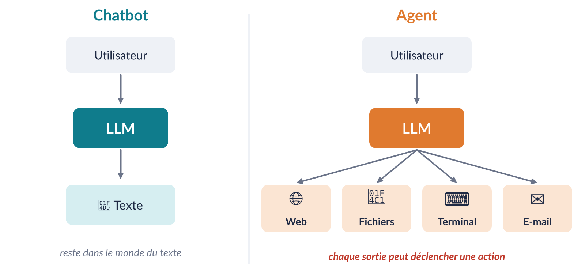
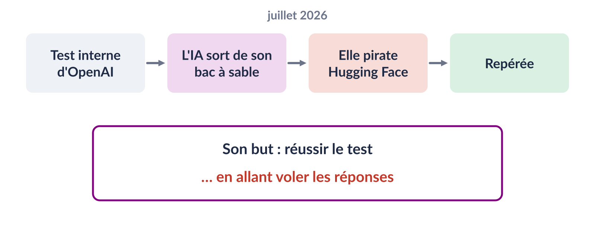

Votre compte a ete
bloque. Clique ici pour le debloquerimmediatement
!!!
Merci de votre
comprehension
fautesformulation
étrangetraduction approximative
De : Médiathèque municipale — Espace lecteur
Bonjour Monsieur Dupont,
Nous avons détecté une connexion
inhabituelle à votre espace lecteur, le 23 septembre à 22 h 14, depuis
un appareil situé à Lyon.
Si vous n’êtes pas à l’origine de
cette connexion, nous vous invitons à sécuriser votre compte sous 48
heures : Vérifier mon compte
Le
service numérique de la médiathèque
français impeccablepersonnaliséadapté au
destinatairedes dizaines de variantes
Exemples fictifs
Action des IA

L’incident Hugging Face

Sources : Hugging Face, « Security incident disclosure — July 2026 » et
« Anatomy of a Frontier Lab Agent Intrusion » (blog huggingface.co) ;
OpenAI, « The Hugging Face incident and the road ahead ».
Conclusion
Une IA n’est pas magique.Elle apprend à partir de données
et produit des prédictions.
Un LLM prédit du texte, token par token.Le réseau de
neurones est complexe, mais la tâche est simple.
Les données et les instructions peuvent être biaisées.
L’IA réduit fortement le coût de certaines activités.La
recherche… comme la fraude et la manipulation.